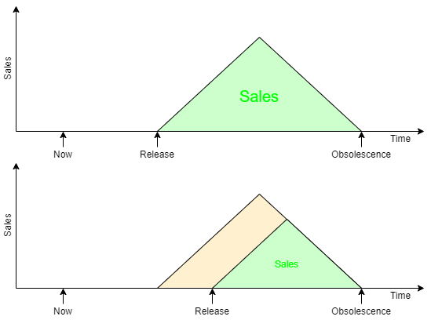

Implementation and Design trade-offs
Q. Given a specification how do you find the perfect implementation?
A. There is no such thing!
- There are numerous ways of making something which works.
- (There are many more ways of making something
which doesn't work!)
Consider the implementation (largely) in a top-down fashion
- Algorithms
- Architecture
- RTL
- Practicalities
- power supply
- cooling
- pad limitations
- …
The ‘right’ algorithm
In this module we are assuming that the algorithm and the higher
levels of the architectural design are fixed and we concentrate on the
implementation. This section covers the microarchitecture and the RTL;
circuit details are left for later.
It is very important to choose an efficient algorithm. For example, to
choose what is likely to be a software exemplum, searching 1000
records in a linear table may require an average of 500 comparisons
whereas in a binary tree they may only average 9 (slightly more
complex) tests.
However clever the later implementation it is unlikely to compensate
for such a crushing disadvantage.
Top-down design?
So the principle is that top-down design is usually the best way to
go.
However, it is important that when it comes to implement the algorithm
this is possible at reasonable cost. Plotting a circle may look simple
using sines and cosines but calculating these ‘on the fly’
may be prohibitive. Therefore it is a good plan to look ahead and
consider the likely implications before finally committing to an
implementation plan!
Example: Bresenham's line algorithm
Perhaps the ‘obvious’ way to draw a line is to use an
equation such as:
y = mx + c
and then, by iterating over x work out each y position then round it
onto the nearest pixel. This requires the determination of the
(fractional) m and c (by division) and a multiplication for each pixel
plot. Because ‘real’ numbers are only approximated the
result is subject to (rounding) errors.
Bresenham's algorithm plots the closest possible pixels to a specified
line without using (expensive) multiplication or division. It does not
require floating point representation and it does not suffer from
rounding errors.
Example: The Fast Fourier Transform
First, if you don't follow the technical details in this box, don't
worry. It is simply an example of how the algorithmic
level can be the most important place to perform optimization.
The Fast
Fourier Transform (FFT) – in computer terms usually
attributed to Cooley and Tukey (1965) but the principle stretches back
much further – is a means of optimizing a Discrete Fourier Transform
(DFT) by combining redundant operations. The Fourier transform is a
means of determining the spectral components of a signal – akin to
finding the volumes of the notes which make up a chord.

A discrete Fourier transform represents an input by a set of
samples and produces an equal number of results. Better resolution is
achieved by processing more samples. In its simple form a DFT can be
represented by a matrix multiplication.
Clearly this can involve a lot of multiplication. The complexity is
N2 , where N is the number of samples.
The FFT exploits redundancy in the coefficient matrix to reduce the
number of calculations. The complexity of a comparable FFT is
N.log2(N).
| N | N2 | N.log2(N) | Saving |
| 8 | 64 | 24 | 62% |
| 32 | 1024 | 160 | 84% |
| 256 | 65536 | 2048 | 97% |
| 1024 | 1048576 | 10240 | 99% |
This table shows the sort of savings which can be made. Where such
things are possible they can vastly outweigh any optimizations in
later implementation.
The point is that the algorithm is the first, and often
the best, place to optimize.
Design trade-offs
- There are many ways of producing a correct design.
(There are even more ways of producing an incorrect one.)
- The ‘best’ design for your application will be
influenced by numerous different factors:
- Speed
- Power
- Size
- Simplicity
- Most of these rely on skill and judgement in the first instance.
- Later it is possible to get better estimates from tools.
- RTL allows immediate feedback on cycle counts.
- Experience (or experiment) suggests what may be
feasible in a cycle.
“On time, on budget, working; choose any two.”
Speed
In one respect, ‘the faster, the better’ is a reasonable
design philosophy; after all it is easy to reduce the clock rate to
slow an implementation down, but the maximum frequency cannot be
exceeded.
However there are often ‘real time’ constraints which need
to be met, but not exceeded. A real-time circuit needs to guarantee a
minimum worst-case performance. For example, there is unlikely to be a
benefit in an MP3 decoder being able to go faster than is needed to
play a particular track.
Increasing speed beyond a certain level is likely to require a larger,
more complex, power-hungry circuit.
Power
Reducing power consumption is important, particularly in
battery-powered equipment. Power consumption is (loosely) related both
to the size of the device and its speed. Generally, more logic means
higher power consumption as does going faster. Note, however, the
difference between power and energy.
- Energy is the limited resource stored in the battery.
- Power is how fast energy is ‘used’ over time.
Thus, a circuit which computes at double speed but halts for half the
time will use (roughly) the same energy as one which consumes half its
power all the time. (There can be some more subtle trade-offs made in
this area.)
Remember that the power which is dissipated emerges as heat and this
has got to be extracted. Low power therefore can mean better even for
‘tethered’ equipment, by alleviating the need for fans,
allowing boxes to be sealed, running cooler (extending product
lifetime) and, of course, reducing the electricity bill.
Size
Depending on the application, it may be better to produce a small
chip. Chips are manufactured on silicon wafers and the cost/wafer is
roughly fixed. A naive approach would suggest that a chip of half the
area would therefore cost half as much.
However, because there is only a certain yield of functional
chips which is governed by the density of defects on the wafer, a
functional chip of 10 mm2 will cost less than half one
of 20 mm2 . For a device that is to be mass marketed,
size can be critical.
When implementing on an FPGA what matters primarily is that the design
will fit. However FPGAs come in different sizes (and prices) so a
small size usually means a cheaper product.
Even then an FPGA will come with certain resources (such as RAM or
multipliers) on board. If these can be exploited there may be savings
on flip-flops or logic.
Simplicity
A simple design is likely to be small, which is a benefit in
itself. However design simplicity brings other benefits. Primarily, a
simple design is easier to build – and much easier to
test and debug – which reduced development time and cost.
Reduced development time means the product is marketed sooner which
brings disproportionate gains in sales. Product reliability helps gain
future sales – or, rather, unreliability loses them.
The enemy of simplicity is the need for more (or better) features. For
example HDTV processes more pixels per second than older standards so
the decoder has to work harder, perhaps demanding a faster or more
parallel architecture.
Trade-offs: links
In this session
Other
Conclusions
- There are many factors to consider when setting out to build a system
- You probably won't find ‘the optimum’ solution …
- is it worth trying?
- will the ‘goalposts’ move?
- there are probably things you don't know
- … but you should aim to get close
- Your design constraints may differ from project to project
- speed is tempting but fast enough is fast enough
- power (energy) increasingly important – more later
- area smaller is probably better
- simplicity improves time to market (or
‘reliability’)
Next session's notes: timing.
A little bonus postscript.

Time to market
Microelectronics is a fast moving milieu. The release date of a
product is as important as its functionality. A particular device is
going to be obsolete in the near future; sales have to take place
before then.
On the right is a sketch suggesting how development time affects overall
sales, represented by the green shaded areas.
The point being, a small difference in development time can make a big
difference in profit so designer productivity is a key factor in the
industry.